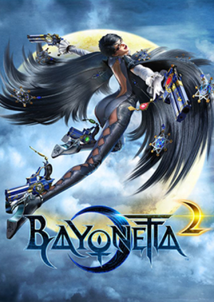

Action · 2014
Bayonetta 2
Combat so legible and excessive it reads as choreography.

Cover: Wikipedia: Bayonetta 2
Facts
- Released
- 2014-02-13
- Genre
- Action
- Category
- Action
- Platforms
- Nintendo
- Developers
- PlatinumGames
- Publishers
- Nintendo
Action · 2014
Combat so legible and excessive it reads as choreography.

Cover: Wikipedia: Bayonetta 2